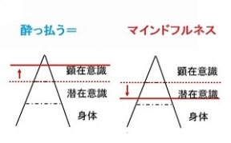
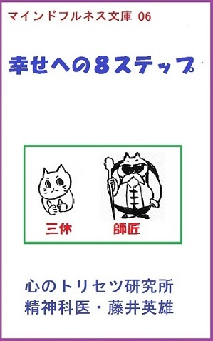

| ３分で読める幸せになるコツ・365日のレッスン vol.9: vol.9 ＜No241～No269＞ 心のトリセツ メルマガ文庫 | |
| 藤井英雄 | |
| kokoronotorisetsusyuppan (2015) | |
３分で読める幸せになるコツ・365日のレッスン vol.9
＜No241～No269＞
「今、ここ」に生きるマインドフルネスと幸せオーラを引き寄せるハッピー・リズメーションで幸せな社会を創る！心のトリセツ研究所・精神科医の藤井英雄です。
この電子書籍は私のメールマガジン「３分で読める幸せになるコツ・365日のレッスン」の約一か月分を編集したvol.９です。まとめて読みたい方や届いたメールをうっかり削除してしまった方のために電子書籍として出版しました。どうぞご活用ください。
＜注意＞
１）メルマガを読み始めて２４１日未満の方はネタバレになります。２４１日過ぎてからお読みいただくことをお勧めします。
２）メルマガ未登録の方もネタバレになります。登録いただいて順番にお楽しみください。
登録はこちらから 無料です♪
今回は編集の都合からナンバーが前後しています。
本書（本メルマガ）のキーワード
マインドフルネス,
自己肯定感,
アファメーション,
傾聴,
マインドフルネス瞑想
☆☆☆☆☆☆☆☆☆☆☆☆☆☆☆☆☆☆☆☆
☆☆☆☆☆☆☆☆☆☆☆☆☆☆☆☆☆☆☆☆
私のマインドフルネス体験
この原稿を書いているのは梅雨です。
ついさっき、うわのそらモードでテレビをみていたら「鹿児島地方に大雨洪水警報が発令されました...」と聞こえてきました。
「ああ、またそういう季節かあ。どこか崩れなければいいなあ...。山が崩れたら道路が通れなくなって...」とぼんやり考えていてブルーな気分になったところでマインドフルネスが起動しました。
大雨にたいして「今、ここ」で何か備えが必要なら現実逃避せずに準備しなくてはなりません。
しかし、うわのそらモードでネガティブ思考してブルーな気分になったところで何の役にもたちませんね (^^;)ゞ
というわけで、マインドフルネス・３秒ルール
不安・ゆううつ・取り越し苦労と名前を付けクヨクヨしてたなあと実況すると気分も幾分軽くなってきましたのでこのメルマガを書いているという次第です。
クヨクヨしていることに気付き手放せただけでもすごい収穫でしたが、メルマガのネタがひとつできてみなさんとシェアできたことがとてもうれしいのです。
☆☆☆☆☆☆☆☆☆☆☆☆☆☆☆☆☆☆☆☆
☆☆☆☆☆☆☆☆☆☆☆☆☆☆☆☆☆☆☆☆
日常生活の中で些細なラッキーやハッピーに注目すると、ラッキーやハッピーに注目する習慣がつきます。
するとどんどんラッキーとハッピーが増えてくるんですよ♪注目したものに気付くという脳の働きがありますから。
というわけで、毎日ひとつ、その日にあった素敵な出来事を「自分のために！」フェイスブックを使って配信しています。
たった一つですが、配信するためにはうれしかったこと、楽しかったこと、感謝できたことを探すことになります。
皆さんもいかがですか？
公表するのが恥ずかしかったら日記でもいいですよ。
☆☆☆☆☆☆☆☆☆☆☆☆☆☆☆☆☆☆☆☆
☆☆☆☆☆☆☆☆☆☆☆☆☆☆☆☆☆☆☆☆
マインドフルネスとは「今、ここ」の現実にリアルタイムかつ客観的に気付いていることです。
とりわけ、外界の刺激によって生じる心の中のネガティブ思考やネガティブな感情にはいち早く気付いて手放したいですね。
私たちはいつも何か考えています。
つまり、思考の渦の中にいて思考があるのが当たり前です。
そんな状態で新しく生じた思考に気付くのは難しいですね。
闇夜の中でカラスを探すようなものです。
もしも思考が無い状態なら新しく思考が出てきた時にすぐに気付けます
だから、瞑想や呼吸法、その他、「今、ここ」に集中していったん思考を消し去り、そこで新しく発生した思考に気付く！
そのトレーニングをすることで思考に気付きやすい状態を目指します。
図の上よりも下の方が黒い四角に気付きやすいでしょう？
上は日常生活で思考にまみれている時
下が瞑想や呼吸法をしている時ですね
下の状態で四角に気付きやすくなったら上の状態でも（日常生活でも）ネガティブ思考にリアルタイムで気付きやすくなります。
Ａ「今、ここ」でマインドフルになるのトレーニングを推奨するわけはここにあります。
☆☆☆☆☆☆☆☆☆☆☆☆☆☆☆☆☆☆☆☆
☆☆☆☆☆☆☆☆☆☆☆☆☆☆☆☆☆☆☆☆
マインドフルネスとは「今、ここ」に生きることで不要なネガティブ思考を手放し、幸せに生きる技術です。
マインドフルネス自体が目的でもあり、また何かをうまく成し遂げるための手段にもなります。
すなわち、『マインドフルに○○する！』
すると、効果的に仕上げることができたり、それをやっている自分が誇らしく思えたりするのです。
たとえば、マインドフルに食べれば、おいしく感じる上に食べるという行為を通して自らを幸せにもしてくれるのです。
たとえば、マインドフルに掃除をすれば、掃除自体がたんなる作業から喜びの仕事に変容し、掃除している自分もまた充実感に満たされます。
たとえば...マインドフルになにかをすれば、それはすべて瞑想に昇華し、幸せな自分を実現します。
２０年ほど前に偶然に出会ったマインドフルネス。
効果を実感したのちは身近な人にも勧めてまいりましたが、ヴィッパッサナのリトリートに参加したり、座禅の道場に参禅と聞くとしり込みしてしまう方も多いのもまた事実！
もっと手軽に自宅で練習できないものかと考え、自己流で工夫し「３秒でポジティブになる！心のトリセツ流・マインドフルネス入門」を考案いたしました。
自宅で手軽に...と書きましたが、もちろん、座禅や瞑想を否定するものではありません。
私の講座でマインドフルネスを知り、さらに詳しく研鑽をつみたい人には本格的に座禅や瞑想をお勧めするための、いわばマインドフルネスの入り口という役割を担いたいと考えているのです。
☆☆☆☆☆☆☆☆☆☆☆☆☆☆☆☆☆☆☆☆
こんな質問をいただきました
呼吸法を毎日続けることができません！
というわけで今日はモチベーションのヒントを３つ
１）結果の可視化
呼吸法をするたびに効果が実感できればだれでも継続できます。
ところが、その日の努力が目に見えて現れるわけではありませんね。
モチベーションが続かないのは日々努力しているのに結果が目に見えて現れないからです。
そこで日課表をお勧めしています。
毎日の努力を日課表に記載することで目に見える形に変換します。結果の可視化です。
２）日課の習慣化
日課表を使ってとりあえず２８日間続けてください。２８日間続けばそれは習慣になります。
歯磨きをせずに寝たら落ち着かないように、呼吸法をしないと落ち着かないという所まで頑張って続けてください。
３）呼吸法の意義を確認
私たちはふだんひっきりなしに思考しています。次から次へとわいてくる思考の中で、有害なネガティブ思考に気付くのは容易なことではありません。
それはあたかも闇夜にカラスを探すようなものです。
呼吸法していったんマインドフルになると思考が消えます。
そこから新たに立ち上ってくる思考（雑念）は気付きやすいのです。
つまり、呼吸法は思考（ネガティブ思考）に気付きやすくなるための基礎トレーニングなのです。
基礎トレーニングをきちんとやっていると、やがて日常生活の中で有害なネガティブ思考にも気づきやすくなります。
つまり、マインドフルネス・３秒ルールを使ってネガティブ思考を手放すことが上手になるには呼吸法も同時に行うのが効果的なのです。
☆☆☆☆☆☆☆☆☆☆☆☆☆☆☆☆☆☆☆☆
☆☆☆☆☆☆☆☆☆☆☆☆☆☆☆☆☆☆☆☆
こんな質問をいただきました！
呼吸法をして雑念を探すのですが、雑念が出ません！
Ａ
呼吸法を指導すると、雑念が全然でないという人がいます。可能性が二つあります。
１）集中力が強い
もしかしたら修行が進んでいてものすごく集中力が強くなり、マインドフルネスが継続しているのかもしれませんね。それで雑念が出てこないのです。
すばらしいですね。どうかマインドフルネス呼吸法を続けてください。
２）闇夜の烏
そうでないとしたら、雑念が出ているのに気付いていない可能性があります。
私たちはふだんひっきりなしに思考しています。次から次へとわいてくる思考の中で、有害なネガティブ思考に気付くのは容易なことではありません。
それはあたかも闇夜にカラスを探すようなものです。上の図では背景（普段の思考）に隠れて内側の黒い四角（ネガティブ思考）が目立ちません。
呼吸法をしてマインドフルになると、いったん思考が消えます。呼吸に集中することでその他の思考をいったん消去するのです。
そこから新たに立ち上ってくる思考（雑念）は気付きやすいのです。
下の図では呼吸法の効果で多少背景が薄れてきて黒い四角、すなわち雑念が目立つようになっています。
つまり、呼吸法は思考（ネガティブ思考）に気付きやすくなるための基礎トレーニングなのです。
ところがマインドフルに呼吸法をしているつもりでも集中力が足りないと思考を消すことができません。
つまり、うわのそらモードのままぼんやりと呼吸に集中しているつもりになっているのです。
うわのそらモードのまま（上の図のまま）呼吸法をしていても思考や雑念には気付かないかもしれません。
頑張ってマインドフルネス・呼吸法を続けましょう。
☆☆☆☆☆☆☆☆☆☆☆☆☆☆☆☆☆☆☆☆
☆☆☆☆☆☆☆☆☆☆☆☆☆☆☆☆☆☆☆☆
マインドフルネスとは「今、ここ」の現実にリアルタイムかつ客観的に気付いていることでした。
気付いているということは、認識できるということです。つまり、マインドフルネスとは顕在意識の領域のことです
ただし、顕在意識＝マインドフルネスではありません
認識できていて、しかも、認識していることに気付いていることがマインドフルネスです。
マインドフルネスが上達すればやがて認識できる範囲がふえて、潜在意識の中に隠されていたものも認識できるようになるでしょう。
顕在意識と潜在意識の境界は固定されていません
たとえば、うわのそらモードや酒に酔った状態なら境界は上昇し、認識できる範囲が狭まります。だから、外界の刺激に反応的になってしまい、意図的に、正常に、合理的に判断できなくなってしまします。

マインドフルネスならむしろ境界は下に下がって認識できる部分が広がります。その結果、時に潜在意識領域にまで認識の光が届くようになります。
その時、潜在意識の智恵にふれてすばらしいアイデアが天啓のように訪れたり、、また、隠されていたものに光が当たって洞察がおこり、長年の問題が解決に向かうこともあるでしょう。
たとえば、レジで自分の前に並んでいる人が小銭を財布からもたもたと出している。
「自分なら小銭ぐらい用意しとくのに！気が利かない人だなあ」
そうイライラした自分にふと気づく。
マインドフルにそのイライラを手放す。
そこでふと「そうか！自分は自分の後ろの人に迷惑をかけて非難されるのが怖かったんだ！だから小銭を用意していたんだ！」と悟るのです。
後ろの人の迷惑にならないように小銭を用意していることは知的なレベルでは当然認識しています。
それが、自分の恐れと深く結びついていることをマインドフルな状態で気付いた時に、表面的なイライラだけでなく、潜在意識の中にある自分の恐れを癒して手放すチャンスが来るのです。
マインドフルネスは「今、ここ」の気づきです。顕在意識の領域の話です。しかし、マインドフルネスの光は顕在意識をこえて潜在意識にまで届くことがあります。深い癒しはここから始まります。
☆☆☆☆☆☆☆☆☆☆☆☆☆☆☆☆☆☆☆☆
☆☆☆☆☆☆☆☆☆☆☆☆☆☆☆☆☆☆☆☆
☆☆☆☆☆☆☆☆☆☆☆☆☆☆☆☆☆☆☆☆
心のトリセツ研究所のモットーはこれです
―――――――――――――――――
マインドフルネスで幸せになる
マインドフルネスで幸せな社会を創る
―――――――――――――――――
電子書籍の出版もその目的の一環です。本日は著書紹介です。
＜01＞奇跡を起こすマインドフルネス 幸せな人生を送りたい人へ
http://www.amazon.co.jp/dp/B00AQ3LSZ2/
マインドフルネスとは何か
マインドフルネスは何に効くのか
マインドフルネスの強化法について
約14000字で簡潔に解説しました。
【読者の声】
人間は誰でも生きていればストレスを抱えるものですが、この本はそのストレスに効果のあるマインドフルネスについて解説しています。
思考と感情に気づき、マインドフルネスでいることはすぐにはできないかもしれませんがこの知識に触れ実践して身につけていけば、人生を生きる上で最強のアイテムになると感じました。
ストレスは避けたいものですが、それを見て見ぬふりをするのではなく、それに正面から向き合い解消できたら何も恐ることはなくなるのでしょう。自分が望む生き方ができるようになると希望を与えてくれる本です。
私も毎日実践していこうと思いました。
☆☆☆☆☆☆☆☆☆☆☆☆☆☆☆☆☆☆☆☆
☆☆☆☆☆☆☆☆☆☆☆☆☆☆☆☆☆☆☆☆
―――――――――――――――――
マインドフルネスで幸せになる
マインドフルネスで幸せな社会を創る
―――――――――――――――――
電子書籍の出版もその一環です。本日は著書紹介です。
＜03＞マインドフルネスで恐怖に打ち勝つ
http://www.amazon.co.jp/dp/B00BKFHOWQ
マインドフルネスで不安と恐怖に打ち勝つ方法
マインドフルネスとは「今、ここ」の現実にリアルタイムかつ客観的に気づいていることです。
何かを恐れている時、恐れている対象に気づいているのではなく、「自分がいまここで恐れている」ということに気づくことで、その恐れから一歩ひいた冷静な自分を取り戻すことができるのです。
【読者の声】
１）恐れにフォーカスされた一冊です。
はじめの方は紙の本と被ってる所があり、
これ前にも読んだなぁと感じますが、
徐々に深く掘り下げられていきます。
まず、恐れとは何か？恐れの正体が判ったら、どう対処すれば良いのか？ということが具体的に書いてあります。
体の形を整えることから、気持ちを整えるって面白い。
実生活に直ぐに役立つ本だと思います。
２）人はついつい嫌なことや辛いことから目をそむけてしまったり、怖いものは見ないようにしてしまいます。また、突然にトラブルに巻き込まれて頭が真っ白になってしまうこともあります。
そんな時に「いま自分はどう感じているのか」を理解するだけで、不安や恐怖は軽くなるということを、わかりやすく解説した本です。
そして嫌なことに直面した時には、まずは姿勢や呼吸で、身体の反応から先に
「落ち着いた前向きな状態」にしてしまおう、という切り口はとても面白かったです。
後半は苦手なことの克服法を、噛み砕いて解説されています。
仕事や勉強・人間関係で「うまくできない」と苦手意識を持ってしまったこと、「失敗したらどうしよう」と怖くて一歩が踏み出せないことがある人は、とてもおススメです。
☆☆☆☆☆☆☆☆☆☆☆☆☆☆☆☆☆☆☆☆
☆☆☆☆☆☆☆☆☆☆☆☆☆☆☆☆☆☆☆☆
―――――――――――――――――
マインドフルネスで幸せになる
マインドフルネスで幸せな社会を創る
―――――――――――――――――
電子書籍の出版もその一環です。本日は著書紹介です。
＜04＞やる気爆発！心のトリセツ流 モチベーションの秘訣♪
http://www.amazon.co.jp/dp/B00CKBZYYE
「掃除をしなくてはいけない」
「試験勉強やらなきゃ！」
そう思いながらも、なかなか始められずに先送りしてしまうことはありませんか？そんなあなたにこそ読んでほしい本です。
はじめの一歩を踏み出し、徐々にモチベーションを高め、そして理想のゴールに突き進む方法を書きました。
やる気が出ないシチュエーションは次の６つです。
１）完ぺき主義；そして批判される恐れ
２）イヤイヤやらされている時
３）つまらない作業
４）仕事が多すぎ、難しすぎて無理だ！
５）身体の調子がわるくて気分が乗らない
６）そのほかのケース、補足のヒント
それぞれにあった対策をご提案します。
【読者の声】
非常に低価格にも関わらず、イラストや図版が活用されていて、非常に読んでいて、わかりやすく、読み応えのある本です。
私の中の気づきは「ま、いいか」という言葉の活用です。やらなきゃいけないのに、出来ていない。そんな自分を感じて、劣等感や自己否定の感情に襲われた時この言葉を使って、気持ちを切り替える。
非常に面白く、実践的なノウハウだと思いました。
それ以外にも、身体を活用した感情を整える為の方法が紹介されていて価値のある本です。
心のトリセツ出版・マインドフルネス文庫
幸せへの８ステップ: 「今、ここ」で幸せになるためのマインドフルネスと８つのアファメーションより抜粋しました

☆☆☆☆☆☆☆☆☆☆☆☆☆☆☆☆☆☆☆☆
☆☆☆☆☆☆☆☆☆☆☆☆☆☆☆☆☆☆☆☆
―――――――――――――――――
マインドフルネスで幸せになる
マインドフルネスで幸せな社会を創る
―――――――――――――――――
電子書籍の出版もその一環です。本日は著書紹介です。
「自己肯定感ってなんです？」
『自己肯定感とは、あるがままの自分を肯定できることじゃ』
「あるがままの自分ですか？自分が今のままでいいと思ったら成長できないじゃないですか」
『あるがままでよいといっても、もう成長しなくてもいいということとは違うんじゃ。逆に、あるがまの自分を肯定できないとどういう現象が起こるかを解説したほうが分かりやすいじゃろう』
「はい。お願いします」
『あるがままの自分を肯定できないのはなぜか？それは、あるがままの自分では他人に肯定してもらえない、愛されないという恐れがあるからなのじゃ』
「あるがままでは愛されないという恐れ？」
『そうじゃ。あるがままの自分では愛される価値はない！みんなに嫌われてしまう！！受け入れてもらうためにかなり無理をしなくてはいけない。だから、ホントは嫌なことでも無理に引き受けたり、ほしいものもほしいといわずに我慢したりするんじゃよ』
「な、なるほど」
『そして、自分を認めてもらうためには
もっとお金を稼げる人にならなければならないとか、
もっと成功しなくてはならないとか、
もっと成績がよくなければならないとか、
女性なら、もっとかわいくなければとか、
"もっともっと"がどんどん続くんじゃ』
「ふうん・・・」
『はっきりと自分の意見を言うと相手が不機嫌になるのではないかと恐れて意見がいえなかったり、断られるのがつらいので気軽に頼むことが出来なくなるのう』
「は、はあ・・・」
『始める前から失敗しそうな漠然とした不安に付きまとわれていたり、おそるおそる始めてみるとやっぱり失敗して（ああやっぱり失敗した！）と思ってみたりもする』
『逆に、自己肯定感が強い人間というのはこんな人じゃな。あるがままの自分を、まあ、いいか。それでよしと思えて受け入れることができる。
だから、他人の評価に過度に依存することがない。
嫌なことは嫌ときちんと断ることができるし、やりたいことはやりたい、ほしいものはほしいとはっきり主張できる。
しかも、そういう自己主張をしたとしても嫌われることもなく、うまく周りの人ともやっていけるし、かえって物事がうまくいくんじゃよ』
【解説とヒント】
自己肯定感強化の秘訣！それはマインドフルに生きることです♪この本ではマインドフルに生きて自己肯定感を強化し、幸せになる方法を解説します。
心のトリセツ出版・マインドフルネス文庫
幸せへの８ステップ: 「今、ここ」で幸せになるためのマインドフルネスと８つのアファメーションより抜粋しました
☆☆☆☆☆☆☆☆☆☆☆☆☆☆☆☆☆☆☆☆
☆☆☆☆☆☆☆☆☆☆☆☆☆☆☆☆☆☆☆☆
「ポジティブに考えるぞ！って決意しても、いつのまにかついネガティブに考えちゃうんですよね」
『そうなんじゃ！無自覚でぼうっとしていると、人の心は心配をするように出来ておる。
さらに、今、心配がなくとも、過去の嫌な記憶をわざわざ読み出して後悔してみたり、未来のことを心配してみたりするものなんじゃ』
「心配をするように出来ているって、どういうことです？」
『心配をすることが心（思考）の役割だからじゃ』
「心の役割？どういうことです？」
『三休がなにかひどい目にあったとしたら、もう二度とそんな目に会いたくないと思うのではないか？
それとも、勉強になったからもっとひどい目にあっても面白いかもしれないなあ、などと考えるかの？』
「２度とそんな目にはあいたくない！と考えるでしょうね」
『それが普通じゃな。そこで三休の心はこう考える。"もうひどい目には二度とあいたくない！どうしたらよいか？"とな。
そこで、過去のひどい目にあった体験を何度も思い出しては考え、同じようにひどい目にあいそうなときにはすぐに警告を出せるように身構えたり、そんな目にあわないようにするためにはどうすればよいかと対策をねったりするんじゃ』
「ああ、なるほど」
『将来に備えて過去の嫌な記憶を呼び出す！これを、うっかりうわの空でやると、過去の後悔と未来の不安になるんじゃ。
さらに現状を分析して対策を立てているるもりでも、いつのまにか相手への不満や現状へのぐちに終始することになる。
ぼうっとしとると心は後悔や不安、不満などというネガティブなことばかり考えてしまい、その結果、ゆううつな気分になるというわけなんじゃよ』
「そういうことか・・・」
【解説とヒント】
将来に備えて、過去の失敗を教訓として自分を高め、環境を整える！
これをマインドフルに行えばいいのです
超自信作！
心のトリセツ出版・マインドフルネス文庫
幸せへの８ステップ: 「今、ここ」で幸せになるためのマインドフルネスと８つのアファメーションより抜粋しました
☆☆☆☆☆☆☆☆☆☆☆☆☆☆☆☆☆☆☆☆
☆☆☆☆☆☆☆☆☆☆☆☆☆☆☆☆☆☆☆☆
レッスン２５３ 超自信作！
『マインドフルネスとは今、ここでの現実や自分の想念（思考と感情）にリアルタイムかつ客観的に気づいていることじゃ』
「ん？よくわかりません」
『ネガティブな思考が流れたときに、リアルタイムで自分が考え、感じているということに気づけることじゃ。たとえば、はっ！自分は今、恐れている！とか自分は今、怒りを感じている！そう気づいていることじゃ』
「それがいったい何の役に立つんです？」
『三休がくよくよと後悔していることに気付いたとしよう。すると、その後悔というネガティブ思考から一歩ひいて客観的な視点から己自身を眺めることになる。
つまり、後悔を手放して前向きに考えるチャンスがめぐってきたわけじゃ』
「ちょ、ちょっと待ってください、師匠！わたしはちゃんと後悔していることぐらい、いつだって気づいてますよ！」
☆☆☆☆☆☆☆☆☆☆☆☆☆☆☆☆☆☆☆☆
【解説とヒント】
マインドフルネスとは「今、ここ」の気づき！自分の思考や感情に気付いているときはマインドフルネスです。これがなかなか難しいのです！
☆☆☆☆☆☆☆☆☆☆☆☆☆☆☆☆☆☆☆☆
☆☆☆☆☆☆☆☆☆☆☆☆☆☆☆☆☆☆☆☆
『では、これからはネガティブな思考を始めたら、すぐに気づいて、そしてその思考を考えまいと小細工をしたり、ネガティブなことを考えてしまったことを後悔したり、またそんなネガテイブなことを考えてしまった自分自身を自己嫌悪したりせずに、じっと思考そのものと思考する自分とを観察することに心がけるようにしてみるんじゃ』
「はあ、それはどんな効果があるんですか？」
『きちんと思考に気づけていたならば、その思考は小さな雲が青空にとけていくように、また、氷が熱い湯の中で溶けていくように、徐々に小さくなってゆくじゃろう』
「な、なるほど！それを観察せよというわけですね」
☆☆☆☆☆☆☆☆☆☆☆☆☆☆☆☆☆☆☆☆
【解説とヒント】
ネガティブ思考に気付き、一歩引いた視点から客観視していると、やがてネガティブ思考は手放され、ネガティブ感情は癒されていきます。
心のトリセツ出版・マインドフルネス文庫
幸せへの８ステップ: 「今、ここ」で幸せになるためのマインドフルネスと８つのアファメーションより抜粋しました
http://amzn.to/1Cp04A2
☆☆☆☆☆☆☆☆☆☆☆☆☆☆☆☆☆☆☆☆
☆☆☆☆☆☆☆☆☆☆☆☆☆☆☆☆☆☆☆☆
『たとえば、三休がレジに並んでいて、前の人が財布からもたもたと小銭を出していたとしよう』
「イライラしそうですね」
『そのイライラする感じにきちんと気付いて、イライラする自分を観察できていたとする。すると突然ひらめくんじゃ』
"あっ、そうか！自分は他の人の迷惑にならないように小銭を最初から用意しておくけど、それは後ろの人ににらまれないかと思って恐れているからだな。自分に許していない行為だから他人がしていると無性に腹が立つんだ"
「そ、それでどうなるんです？」
『こういう"あっ、そうか！"体験をすると、そのあと、自分と他人をちょっぴり許せたりするかもしれん。この"あっ、そうか！"体験を洞察という。洞察を得ることでストレスから解放されることもあるんじゃ』
「な、なるほど」
【解説とヒント】
マインドフルにネガティブ感情に向き合うとネガティブ感情は癒されます。ただし、うわのそらモードでネガティブ感情を反芻していると増大しますからご用心！
☆☆☆☆☆☆☆☆☆☆☆☆☆☆☆☆☆☆☆☆
☆☆☆☆☆☆☆☆☆☆☆☆☆☆☆☆☆☆☆☆
『ネガティブ思考に気づいたら、なるべく早い段階で名前をつけるんじゃ。
"おっと、これは後悔だな"
"他人を批判してる"
このように自分が気づいていることを言語化しておくんじゃ』
「な、なるほど」
『もちろん、"自己嫌悪！""嫉妬""恨み"など、そのものずばりの単語だけでもええぞ。
どうやって分類していいかわからないものに関しては、とりあえず"ネガティブ思考！"とか"妄想""雑念"とでも仮のラベルをつけておけばええ。
それだけでネガティブ思考の連鎖がいったんストップするんじゃ』
「なんか難しそうだなあ...」
『ネガティブ思考で多いのは、自分に関することでは、過去の後悔、現在の不満、未来の不安、それらの結果である自己嫌悪などじゃ。
他人に関しては嫉妬やねたみ、恨み、被害妄想、不満そして批判などがあるのう』
「へぇ～」
『自分自身を実況中継してみるのもええ。"おーっと、私、三休は、今、（くそっ！）と思ってしまいました"という具合じゃな（これは古館一郎風に）』
「それでどうなるんです？ほんとにそのいやな思考が薄まるんですか？」
【解説とヒント】
ネガティブな想念に名前を付けたり実況中継できるなら、かなり客観視できているということです。一歩引いた視点に立ち、客観視するとき、「今、ここ」で不要なネガティブ思考は手放されます
☆☆☆☆☆☆☆☆☆☆☆☆☆☆☆☆☆☆☆☆
☆☆☆☆☆☆☆☆☆☆☆☆☆☆☆☆☆☆☆☆
心のトリセツ出版・マインドフルネス文庫
幸せへの８ステップ: 「今、ここ」で幸せになるためのマインドフルネスと８つのアファメーションより抜粋しました
『アファメーションとは肯定的自己宣言じゃ。自分はこうありたいという姿を思い描いて、すでにそうなったと想像して高らかに宣言するのじゃ』
「アファメーションをするとどんな効果があるんですか？」
『潜在意識に書き込まれて、その内容がいつか現実のものとなるであろう』
「へー、なるほどねえ。でも、"私は、今、気づきを得ています"って私が言うんですか？なんだかぴんと来ない言葉です」
『もちろん、言い回しは自分にピンと来るように作り変えてよいぞ。これから毎日、繰り返し唱えるんじゃからな』
「では自分流に作り変えてみますね。こんなのどうです？"私は早く気づけるようになりたい"」
『ふぉふぉふぉ！アファメーションに願望の形を入れると、願いはかなわんぞよ』
「ええっ？どうしてです？」
【解説とヒント】
この本では夢と目標を現実化するツール「アファメーション」についても詳しく解説しています。
心のトリセツ出版・マインドフルネス文庫
幸せへの８ステップ: 「今、ここ」で幸せになるためのマインドフルネスと８つのアファメーションより抜粋しました
☆☆☆☆☆☆☆☆☆☆☆☆☆☆☆☆☆☆☆☆
☆☆☆☆☆☆☆☆☆☆☆☆☆☆☆☆☆☆☆☆
「たとえば、休日出勤の交代を頼んできたのが今回は同僚だったでしょう？自己肯定感が弱くて、反射的にＯＫしそうになっても、その場で気づけていたら、もしかして断れたかもしれません。
でも、気づけていても断りにくい時とか、もっといえば、立場上断れないことなんかもあるんじゃないですか？」
『いい質問じゃ。なかなかするどいとこを突いてくるのう。結論から言えば、常に自分の思考に気づけていれば、断れない時のいやな感情もいつかは軽くなるんじゃ。
なぜならば、"なぜ断れないか"、とか、"なぜ嫌な気分になるのか"といった大元の理由についての洞察が得られて、こだわりからの開放が起こるからじゃ』
「洞察が得られるとホントにこだわりから開放されるんですか？」
『たとえば、何度も何度も思考に気づうちに、"あれ？ひょっとすると、引き受けなくっちゃ嫌われるかも知れないって思ってたけど、そうとは限らないぞ"という洞察やひらめきが湧いてくることがある。
そうすると自然に嫌なことは嫌とはっきりと断ることができるようになるというわけじゃ』
「それでも上司の業務命令とか、立場上断れないこともあるじゃないですか？」
【解説とヒント】
三休の疑問は過去のわたし自身の疑問です。そして、もしかしたら皆さんの疑問かもしれません。
心のトリセツ出版・マインドフルネス文庫
幸せへの８ステップ: 「今、ここ」で幸せになるためのマインドフルネスと８つのアファメーションより抜粋しました
☆☆☆☆☆☆☆☆☆☆☆☆☆☆☆☆☆☆☆☆
☆☆☆☆☆☆☆☆☆☆☆☆☆☆☆☆☆☆☆☆
『では、第一のアファメーションを、ここで高らかに宣言するんじゃ』
「せ、宣言ですか？」
『そうじゃ。三休がつくった最初のアファメーションは？』
「ええと..."私は、今、気づいています"だったかな？」
『もう一回！はっきりと』
「"私は、今、気づいています"」
『もっと高らかに！』
「"私は、今、気づいています"」
『もっと力強く！！』
「"私は、今、気づいています"ああっ！」
『どうじゃ？どんな気分じゃ？』
「なんかのってきましたよ。ホントに"今、気づいている"って気分になってきました。それに、いい気分です。これからもがんばるぞってモチベーションがわいてきましたよ」
【解説とヒント】
アファメーションをマインドフルに唱えると奇跡がおこります♪
☆☆☆☆☆☆☆☆☆☆☆☆☆☆☆☆☆☆☆☆
☆☆☆☆☆☆☆☆☆☆☆☆☆☆☆☆☆☆☆☆
『毎日決まった時間やタイミングで唱えるのも良い。たとえば、朝起きたときに布団から出る前に唱えるとか、ご飯を食べる前にアファメーションするとか、寝る前とかに日課にしてしまうのがオススメじゃ』
「なるほど」
『じゃが、もっとも効果があるのは、ゆううつな気分に気づいたときじゃろう』
「えっ！どうしてです？」
『何が原因でゆううつな気分になるんだったかのう？』
「無自覚に後悔、不安、恨みなどのネガティブな思考をしている時でした」
『そういう時こそチャンスじゃ。マイナスを一気にプラスに転ずることが出来る。ゆううつな気分に気づけたら小躍りして喜んでもいいぐらいじゃ。なにせ天国の門がすぐそこにあるということに気づけたんじゃからのう』
【解説とヒント】
天国や地獄がこの世とは別のどこか遠いところにあるのではありません！地獄とは、無自覚に後悔、不安、恨みなどのネガティブ思考にとらわれて、ネガティブ感情にひたりきってしまうことです。
そして、マインドフルネスで気づきを得て幸福感を感じている時、それが天国なのです
心のトリセツ出版・マインドフルネス文庫
幸せへの８ステップ: 「今、ここ」で幸せになるためのマインドフルネスと８つのアファメーションより抜粋しました
☆☆☆☆☆☆☆☆☆☆☆☆☆☆☆☆☆☆☆☆
☆☆☆☆☆☆☆☆☆☆☆☆☆☆☆☆☆☆☆☆
『別の例じゃ。三休は上がり症で、人前で話すときに声が震えるんじゃったな？』
「はい。スピーチは大の苦手です」
『なんども苦手なスピーチを逃げずに挑戦し、なおかつそのときの緊張感や振るえといった現象にラベルをつけていく。
すると、"あっ、そうか！自分は下手なスピーチをしてみんなに馬鹿にされるのが嫌だったのか"と卒然と悟ったりする』
「師匠！下手なスピーチでばかにされるのが嫌なのは当たり前じゃあないですか。そんなの卒然と悟らなくったって最初からわかってます」
『しかしそれは頭の知識じゃな。頭でそうだろうと考えていることと、腹の底からわかって腑に落ちたことは違う。
そして、腑に落ちたことは本人の潜在意識から出てきたことで、出てきた瞬間に"あっ、そうか！"と納得でき、疑問の余地が無い。
さらにその後に同様の体験をするときに苦痛の度合いが格段に少なくなっている。じゃから、洞察を得たときには自分でこれだとわかるぞい』
「な、なるほど」
【解説とヒント】
三休はわたし自身です。この本に書いた洞察はわたし自身の洞察です。
心のトリセツ出版・マインドフルネス文庫
幸せへの８ステップ: 「今、ここ」で幸せになるためのマインドフルネスと８つのアファメーションより抜粋しました
☆☆☆☆☆☆☆☆☆☆☆☆☆☆☆☆☆☆☆☆
☆☆☆☆☆☆☆☆☆☆☆☆☆☆☆☆☆☆☆☆
『三休が無自覚のままで課題から逃げ出そうとすると、課題が大きくなって難題やトラブルになるんじゃ。
自己肯定感を強化するという目的で意図的に、マインドフルに取り組むと難題は課題に変貌するのじゃ。そしてその課題を解決したときに三休は成長できる。じゃからわしはあえて言うんじゃ。三休は愛に包まれている、とな』
「愛、ですか？」
『そうじゃ。三休の成長のために課題を与えてくれるこの宇宙はなんと愛に満ちた世界であることか！』
「う～ん！それを愛というのですか、なるほど～～」
『ただし、課題がきたときに、"これは課題がきたな！"と気づけるかどうかが鍵になるのう。気づければ課題、気づけなければ難題になってしまう』
「なるほど、だから気づきとかマインドフルネスとかが大切だというわけですね」
【解説とヒント】
トラブルやストレスはマインドフルに対処すれば成長のための課題になります。ただし、うわのそらモードで先送りすると難題に育ってしまいます！
このシリーズは
心のトリセツ出版・マインドフルネス文庫
幸せへの８ステップ: 「今、ここ」で幸せになるためのマインドフルネスと８つのアファメーションより抜粋しました
☆☆☆☆☆☆☆☆☆☆☆☆☆☆☆☆☆☆☆☆
☆☆☆☆☆☆☆☆☆☆☆☆☆☆☆☆☆☆☆☆
レッスン２６３
無意識に痒いところを掻いていたということありますね
んっ？無意識...ということはマインドフルネスの反対のうわのそらモードですね。これはマインドフルネスのトレーニングに使えそうです。
というわけで、掻く前に「掻く」と心の中で宣言してから掻くように自分の中でルールを創りました。とはいえ、最初はうっかりうわのそらモードで掻いてしまいます。
あきらめずに続けていくうちにだんだんと掻く前にマインドフルネスが起動するようになってきました。
「掻くぞ」と心の中で宣言→掻くという行為
たいていの行為はうわのそらモードでできるからです。
そこをあえて意識化するのですから結構大変です。しかし、慣れてくるとマインドフルネスのきっかけになってくれるのです。
掻く前にマインドフルになるので掻きすぎることで痒みを悪化させることがなくなるという効果もありますね。
痒いところを掻く話から発展して意図的に行動することでマインドフルネスを鍛える話をシリーズでお届けします。
☆☆☆☆☆☆☆☆☆☆☆☆☆☆☆☆☆☆☆☆
☆☆☆☆☆☆☆☆☆☆☆☆☆☆☆☆☆☆☆☆
レッスン２６４ 意図的に行動する２
昨日は「掻く」と宣言してから、痒いところを掻くことでマインドフルネスを鍛えるというお話をしました。
蚊に刺されるまで待たなくても意図的に行動することでマインドフルネスを鍛えるチャンスはいくらでもありますね
同じようなコンセプトでこんなのはいかがですか？
「蛇口をひねる前に水を出すと宣言する」
ためしに今日一日やってみてください。結構難しいです。
トイレのたびに「しまった！」と思うかもしれません。
そんな時に自分を責めないでください。
できない自分を責めていたら自己肯定感が損なわれて逆効果です。
無意識でできていることをあえて意識化するのはとても難しいことです。
最初はできないのが当たり前と思ってください。
あえて逆に考えてみましょう
「しまった！」と思ったということは？
そう、「しまった」と思ったなら、自分がうわのそらモードだったことに気付いたということですね。すなわち、その瞬間はマインドフルになったということです。
マインドフルになれた自分をほめてあげてもいいくらいです。自分を責める癖がある人は、いっそ気付いた自分をほめてあげましょう。
「意図的に行動する」明日も続きます
☆☆☆☆☆☆☆☆☆☆☆☆☆☆☆☆☆☆☆☆
☆☆☆☆☆☆☆☆☆☆☆☆☆☆☆☆☆☆☆☆
先日から意図的に行動することでマインドフルネスを鍛える話を連載しています。
おとといは「掻く」と宣言してから痒いところを掻くことでマインドフルネスを鍛えるというお話をしました。
昨日は「蛇口をひねって水を出す」時にマインドフルになる方法を紹介しました。
もしも難しいときは蛇口をしめて水を止める時で試してください。ハードルが下がります。
その他、
「ドアを開ける」
「カギを閉める」
「テレビをつける」
など、意図的に行動することでマインドフルネスを強化するエクササイズにすることができます。
ただし、最初からたくさん課題にすると動けなくなってしまいますのでご用心！
今日は「いただきます」と言ってからご飯を食べるというのはいかがです？
なに？
そんなのはもうしている？
そうでしょう♪
ただしうわのそらではなく、マインドフルに言うのです。
心を込めて「いただきます」と言える時、マインドフルネスが鍛えられます。
こういう習慣化してしまっていることだからこそ、マインドフルネスのエクササイズに最適なのです。
おためしあれ♪
☆☆☆☆☆☆☆☆☆☆☆☆☆☆☆☆☆☆☆☆
☆☆☆☆☆☆☆☆☆☆☆☆☆☆☆☆☆☆☆☆
意図的に行動することでマインドフルネスを磨く！のシリーズ第四回目です
意図的に掻く、
意図的に蛇口をひねる、
意図的に「いただきます」と言う
だんだんと高級な話しになっています。
今日は意図的に何をしましょう？
人に会う前にその人の幸せを祈るのはいかがです！
商談で人に会う前にその人が幸せそうに微笑んでいるところをイメージする
だれかに話しかける時に、その人の笑顔を思い浮かべる
ついでに、会う予定はないけど遠くにいる人を思い出してその人の幸せを祈る
なんだかとても温かい気持ちになれそうです
もちろん、マインドフルネスのエクササイズにもなるんです
意図的に行うことは、マインドフルネスのトレーニングです
☆☆☆☆☆☆☆☆☆☆☆☆☆☆☆☆☆☆☆☆
☆☆☆☆☆☆☆☆☆☆☆☆☆☆☆☆☆☆☆☆
意図的に行動することでマインドフルネスを磨くのシリーズも５回目ですね。
あせると動作が速くなります。気ばかりあせって手が震えて余計時間がかかります。
心は今やっている行為の一歩先をみています。つまり、心は今ここにはありません。
今、ここに戻って自分がやっていることに集中してみましょう。
たとえば、スピーチで上がってしまったら？
わざとゆっくり水を飲んでみたり
ゆっくりと歩いてみましょう。
マインドフルに堂々としているとホントに堂々とした気分になってします
もちろん、マインドフルネスも鍛えられるという次第です。
いざ焦ってからゆっくりやろうとしてもきっと思い出せないでしょうね。
だから、普段から「自分は自信がある！」という振りをしておきましょう。
いつかホントになります！
きっとそうなります♪
☆☆☆☆☆☆☆☆☆☆☆☆☆☆☆☆☆☆☆☆
☆☆☆☆☆☆☆☆☆☆☆☆☆☆☆☆☆☆☆☆
このシリーズは蚊に刺されて痒くなったときに、まず「掻く」と宣言してから掻くことでマインドフルネスを鍛えようという話から始めました
→レッスン２６３
マインドフルネスの修行者としては掻かずにマインドフルに痒みを感じるというアプローチもいいですね。
そこで、掻かずにじっと観察するんです。ただし、我慢するのではありません。
痒い！掻きたい！という肉体の欲望を感じつつ、その欲望にまけて掻きそうになる自分を客観視します。
最初は、痒みの場所をじっと観察します。
どの範囲がかゆいのか
どのくらい痒いのか
痒みがどう変化するかなどを感じます
あたかも科学者が実験対象を観察するように感覚を確かめます。マインドフルに身体の声を聴いてみるのです
次にマインドフルに心の声を聴いてみます。つまり、思考や感情を確かめます。
「痒みを感じている」
「掻きたいと思っている」
そう思っている自分を一歩引いた立場から客観視してみます。
「痒いところに手が行きそうになっている」
そんなふうに実況中継してみましょう。
すると不思議なことにあんなに痒かったのに少し痒みが和らいでくることが多いのです。
☆☆☆☆☆☆☆☆☆☆☆☆☆☆☆☆☆☆☆☆
☆☆☆☆☆☆☆☆☆☆☆☆☆☆☆☆☆☆☆☆
なくて七癖と言います。
あなたにもきっと癖があるでしょう
たとえば
緊張したら
貧乏ゆすりをする
ストレスを感じる
と髪の毛にさわる
ウソをつくときに
口を隠すとか目をそらす
圧迫感を感じたときに
爪をかむ
イライラした時に
胸ポケットにある煙草の箱に触る
暇なとき必要がないのに
スマホのスイッチを入れる
自分で自分の癖がわからないときは
身近な人に聞いてみてください
いや、その癖をやめようという話ではありません。癖だけやめようとしたら新しいストレスを生むばかりです。
その癖をするときにはマインドフルになりましょうという話です。
癖をしているときにどのような感情を感じているのかにマインドフルに気付くと、そのネガティブ感情は癒されます。
その結果、癖は必要なくなります。結果的に癖は治るかもしれませんね。
お試しあれ♪
Ａマインドフルネスと３秒ルール
０ メルマガスタートします♪
１ 言葉には力がある
２ ネガティブ思考３つの原因
３ ふと我に返る直前までは
４ マインドフルネスの欠点
５ 勝手に手放されるネガティブ思考
６ マインドフルネスは３秒間！？
補足 「喜びながら」について
７ なぜ３秒以内に？
８ 何を喜ぶのか？
９ ３秒ルール 実例 明日はプレゼン！
１０ ３秒ルールステップ２・感情に名前
１１ マインドフルネス３秒ルール・嫉妬
Ｂ自己肯定感とアファメーション
１２ 自己肯定感とは？
１３ マインドフルネスと自己肯定感の関係
１４ 心のトリセツ全体像
１５ ほめられ上手になる
１６ 自分でほめる
１７ アファメーションは肯定的自己宣言
１８ 肯定形で作るべし！（VS否定形）
１９ 現在形で作るべし（VS願望形）
２０ 現在形で作るべし（VS未来形）
２１ 私のマインドフルネス体験 怒りと一次感情
２２ 能動形で作るべし（VS受身形）
２３ わくわく形で創るべし（VS義務形）
＜ポジティブ日記＞
２４ Ｑ＆Ａ 消えない不安
２５ シンプルにわかりやすく作るべし♪
２６ 手書きすべし♪
２７ 毎日唱えるべし♪
２８ 心をこめてマインドフルに唱えるべし♪
２９ 行動でもアファメーションすべし♪
３０ １歩ずつチャレンジする
３１ トンネルは両方から
３２ ハッピー・リズメーション
３３ ラッキーバージョン
３４ 一石三鳥のハッピー・リズメーション
３５ ポジティブスパイラル
☆身体の声を聴く
３６ 心のトリセツ全体像
３７ 体の声の聴き方
３８ 自律訓練法
３９ バランス
４０ マインドフルにたべる
４１ 身体の声を聴く
４２ おでこ手当て
☆怒り！
４３ 怒りについて質問を頂きました
４４ 怒り２ 怒りは快感？
４５ 怒り３ 怒りが必要なとき
４６ 怒り４ 一次感情と二次感情
４７ 怒り５ 気づきが足りない
４８ 怒り６ 正当な怒り？
４９ 怒り７ 完ぺき主義？
５０ 怒り８ 怒りとは？
５１ 怒り９ 慈悲の瞑想１
５２ 怒り１０ 慈悲の瞑想２
５３ 怒り１１ 慈悲の瞑想への質問
５４ 怒り１２ 怒りを鎮めるアファメーション
５５ 怒り１３ 怒りにも効くおでこ手当て
５６ 怒り１４ さむいは禁句？
５７ 怒り１５ 嫉妬は怒りに似ています
☆不安と恐怖を乗り越える
５８ 不安と恐怖を乗り越える１
５９ 不安と恐怖２ おばけなんかこわくない
６０ 不安と恐怖３ 理解できれば怖くない
６１ 不安と恐怖４ アキレス腱のストレッチ
６２ 不安と恐怖５ おだやかな呼吸
６３ 不安と恐怖６ おでこ手当て
６４ 不安と恐怖７ ドラクエに学ぶ１
６５ 不安と恐怖８ ドラクエに学ぶ２
６６ 不安と恐怖９ ドラクエに学ぶ３
６７ 不安と恐怖１０ 完ぺき主義
６８ 不安と恐怖１１ そもそも恐れとは？
６９ 私のマインドフルネス体験
７０ 心のトリセツの全体像をふりかえる
７１ 自分をほめる１
７２ 自分をほめる２ 長所をほめる
７３ 自分をほめる３ 普通をほめる
７４ 自分をほめる４ 短所もほめる！
７５ 自分をほめる５ 出来たところをほめる
７６ 自分をほめる６ ほめるところを創る
７７ 自分をほめる７ have? do? be!
７８ 自分をほめる８ ごほうび♪
７９ 自分をほめる９ ほめられ上手になる
８０ 人をほめる
８１ 私のマインドフルネス体験 ダンス
８２ あせり１ 丁寧に仕事をする
８３ あせり２ わざとゆっくり
８４ あせり３ リスト
８５ あせり４ 赤毛のアンに学ぶ不安解消法
８６ 私のマインドフルネス体験
８７ 映画に見る心のトリセツ バックツーザフューチャー
８８ 自分を大切にする
８９ 月曜の朝を乗り切る
９０ 癖に気付く
９１ ほとんどの行為は上の空！
９２ 私のマインドフルネス体験
９３ 私のマインドフルネス体験
マインドフルネスとは？
９４ マインドフルネスとは１
９５ マインドフルネスとは２
９６ マインドフルネスの効用
９７ マインドフルネスの欠点
マインドフルネスの強化法
９８ 強化法１ 「今、ここ」を感じる
９９ 強化法２ マインドフルに行動する
１００ 強化法３ マインドフルネス３秒ルール
１０１ 3秒ルールの実例
１０２ 「今、ここ」を生きる
１０３ 「今、ここ」を生きる２
１０４ 意図的にポジティブに考る
認知のゆがみ 行き過ぎたネガティブに気付く
１０５ メールの返信が来ない！
１０６ 認知のゆがみ１ 完ぺき主義
１０７ 認知のゆがみ２ 一般化のしすぎ
１０８ 認知のゆがみ３ 心のフィルター
１０９ 認知のゆがみ４ マイナス化思考
１１０ 認知のゆがみ５－１ 結論の飛躍（１）心の読みすぎ
１１１ 認知のゆがみ５－１ 結論の飛躍（２）先読みの誤り
１１２ 認知のゆがみ６ 誇大視と過小評価
１１３ 認知のゆがみ７ 感情的決めつけ
１１４ 認知のゆがみ８ すべき思考
１１５ 認知のゆがみ９ レッテル貼り
１１６ 認知のゆがみ１０ 自己関連づけ
１１７ A子さんの場合
１１８ B君のネガティブ思考
１１９ B君のネガティブ思考２
１２０ 私のマインドフルネス体験 釣果
ポジティブ思考のヒント
１２１ マインドフルネス3秒ルール
１２２ 形から入る
１２３ 形から入る２
１２４ 形から入る３
１２５ おでこ手当
１２６ 自分を許す―まっ、いいか１
１２７ 人を許す―まっ、いいか２
１２８ 良い面に注目し、ほめる
１２９ 災い転じて♪
１３０ 自分はラッキーだと知る１
１３１ 自分はラッキーだと知る２
１３２ 自分で決める
１３３ 理想の姿を思い描く
１３４ よし、楽しもう♪
１３５ マインドフルに楽しむ
マインドフルネス体験
１３６ 私のマインドフルネス体験 納豆エクササイズ
１３７ 私のマインドフルネス体験 割り込み
１３８ やる気にならない？
ハッピーリズメーションと７つの習慣で幸せ力アップ！
１３９ ハッピー・リズメーションとは
１４０ 四行詩のアファメーション
１４１ ポジティブな言動の習慣化
１４２ 正しい唱え方
１４３ 開発秘話
１６６ 言い間違いやすいのが長所です
１４４ 自己肯定感を強める効果
１４６ セロトニンと脳機能
１４７ 第１の習慣 ラッキーサイクル
１４８ 第２の習慣 私が好き 自分は大切な存在だ
１４９ 第３二の習慣「あなたも好き」 他人を愛する
１５０ 第４の習慣 「まっ、いいか！」 自分のために許す
１５１ 第５の習慣 ワクワクするイメージ
１５２ 第６の習慣 「今、ここ、すぐ」
１５３ 第７の習慣 楽しく「やる」
１５４ まとめ
わたし自身のマインドフルネス体験・他
１５５ 私のマインドフルネス体験 運転
１５６ 私のマインドフルネス体験 ワーカーホリック
１５７ 私のマインドフルネス体験 シャッターチャンス
１５８ 言葉の力 ４と死
１５９ O&A マインドフルネスは宗教ですか？
１６０ O&A マインドフルネスとはポジティブ思考ですか
１６１ Q&A マインドフルネスは一時しのぎですか？
１６２ Q&A ３秒ルールのあと
１６３ Q&A マインドフルネスとは精神集中ですか？
１６４ マキさんのメルマガはお勧めです
１６５ ティック・ナット・ハン
ダイエット企画
１６６ マインドフルネスでダイエット１
１６７ マインドフルネスでダイエット２
１６８ マインドフルネスでダイエット３
１６９ マインドフルネスでダイエット４
１７０ 私のマインドフルネス・ダイエット体験
１７１ 私のマインドフルネス・ダイエット体験２
わたし自身のマインドフルネス体験・他
１７２ アマゾンレビューより
１７３ 奇跡のカード
１７４ 重軽石の秘密
１７５ 私のマインドフルネス体験 信号
１７６ Ｑ＆Ａ ２つを同時に観る
１７７ 私のマインドフルネス体験 洗浄剤
１７８ 考えるな！感じよ♪
１７９ マトリックス
１８０ ミッション
１８１ 私のマインドフルネス体験 桜島のどか灰！
１８２ 私のマインドフルネス体験 うわのそら運転に気付く
１８３ わたし自身のマインドフルネス体験 イライラさせられた！
１８４ 私のマインドフルネス体験 音が出ない！
１８５ マインドフルな時間
１８６ 感情は自分の責任
１８７ わたし自身のマインドフルネス体験 単調な作業にありがとう
＜マインドフルに傾聴する＞
１８８ ある親子を見て...
１８９ 身近な人が悩んでいるときに
１９０ マインドフルに傾聴する
１９１ 愛の反対は？
１９２ シーン１ 健太君を励ます
１９３ シーン２ 傾聴モードで
１９４ アドバイスの危険性
１９５ 傾聴の基本姿勢とスキル
１９６ 傾聴の具体的な方法
１９７ 傾聴の効果 前篇
１９８ 傾聴の効果 後編
＜私のマインドフルネス体験＞
１９９ 私のマインドフルネス体験 アイドリングストップ
２００ 私のマインドフルネス体験 先送り
２０１ 私のマインドフルネス体験 やりたいことリストと伸びしろ
＜マインドフルネス呼吸法＞
２０２ ＡとＢ、２つのエクササイズ
２０３ おでこ手当法
２０４ おなか？鼻？それとも...
２０５ 呼吸法のつづき
２０６ 呼吸法や瞑想は素振り
２０７ おちこむ？よろこぶ？
２０８ いつやるの？
２０９ 呼吸法のまとめ
２１０ マークトゥエイン
２１１ とんかつとポジティブ思考
２１２ 古墳と街並み
心のトリセツの全体像＝幸せになるコツ
２１３ 心のトリセツの全体像
２１４ マインドフルネスとは
２１５ 自己肯定感とマインドフルネス
２１６ 自己肯定感強化の秘訣
２１７ 身体の声を聴く
感情を観る
２１８ マインドフルに恐れを観る
２１９ マインドフルに悲しみを観る
２２０ マインドフルに怒りを観る
２２１ マインドフルに嫉妬を観る
２２２ ブルーマンデーを楽しく♪
２２３ 三日月のメタファー
２２４ 言葉の力
慈悲の瞑想
２２５ 成長はスパイラルで
２２６ マインドフルネス、自己肯定、慈しみ
２２７ なぜ自分から
２２８ 親しい人たちの幸せを祈る
２２９ 生きとし生けるものの幸せを祈る
２３０ 嫌いな人の幸せ祈れます？
２３１ 嫌いな人の幸せの祈り方
２３２ 悩み苦しみがなくなりますように
２３３ 本当の願い
２３４ 願望形でいいの？
２３５ 毎日唱えよう♪
２３６ いつ唱えます？
Ｍさんの気付き
２３７ Ｍさん語録（１）
２３８ Ｍさん語録（２）
２３９ Ｍさん語録（３）
２４０ 最初の一口だけは
藤井英雄 心のトリセツ研究所代表
精神科医・医学博士
マインドフルネス実践家・日本キネシオロジー学院顧問
心理学・東洋医学の豊富な知識に加えて、40年の瞑想歴、20年以上のマインドフルネスの実践を通じ、ネガティブ思考を克服した自らの経験をもとに、マインドフルネスの指導を開始。ブログやフェイスブック、セミナー、出版（下記）を通じて積極的に情報発信。
ちなみにマインドフルネスとは、「今、ここ」を生きることで、あるがままの世界を感じ、ネガティブ思考を手放してポジティブに生きるスキルである。あのgoogleがマインドフルネスを社員研修に取り入れたことで注目されている。
従来、マインドフルネスの習得には長期間にわたる禅や瞑想の修行が不可欠であったが、伝統的なマインドフルネス瞑想をもとに、日常生活のなかで手軽にマインドフルネスを習得できる画期的なプログラム「３秒でポジティブになる！心のトリセツ流・マインドフルネス入門」を開発し指導している。
さらに、瞑想の経験がない人でも数か月の実践でマインドフルネスの指導者になれるインストラクター養成講座も同時に開催。
☆＜心のトリセツ研究所のミッション＝マインドフルネスで世界を平和に♪＞
まず、自分自身がマインドフルネスで幸せになる。
そしてその幸せを自分のまわり（半径1メートル！）に広げる。
その人もまたマインドフルネスで幸せになり、
自分のまわり（半径1メートル！）を幸せにする。
ついには世界中の人がみな幸せになる。
その結果、世界中が平和になる。
その夢の実現を自らの使命（ミッション）とし、「心のトリセツ流マインドフルネスインストラクター養成講座」を鹿児島および関西にて開催。
マインドフルネスに関する著書一覧 http://amzn.to/19Wvr6q
１）ビジネスマンのための「平常心」と「不動心」の鍛え方（同文館出版）
２）幸せオーラを引き寄せる ハッピー・リズメーション（秀和システム）
３）３秒で幸せになる！マインドフルネスの奇跡（クローバー出版・2015年/準備中）
そのほか、電子書籍シリーズ「100円で読む・心のトリセツ」刊行中
サイト 心のトリセツ.com
http://xn--u9j9h1ao4on18y.com/
無料メルマガ 「３分で読める幸せになるコツ・365日のレッスン」
https://www.agentmail.jp/form/pg/1793/1/
【イラスト協力】
GRANADOODLE[グラナドゥードゥル]様
http://plaza.rakuten.co.jp/underdog/
ソザイヂテン様
http://www.sozaijiten-business.rash.jp/
猫のイラスト yoko8ch様
https://coconala.com/users/62303
かわべよしこ様
https://coconala.com/services/36561
☆☆☆☆☆☆☆☆☆☆☆☆☆☆☆☆☆☆☆☆
copyright 心のトリセツ研究所 藤井英雄
☆☆☆☆☆☆☆☆☆☆☆☆☆☆☆☆☆☆☆☆